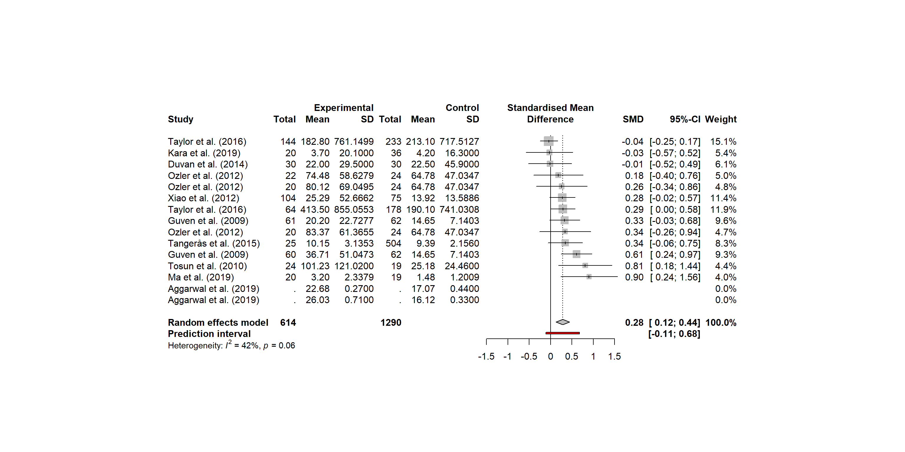
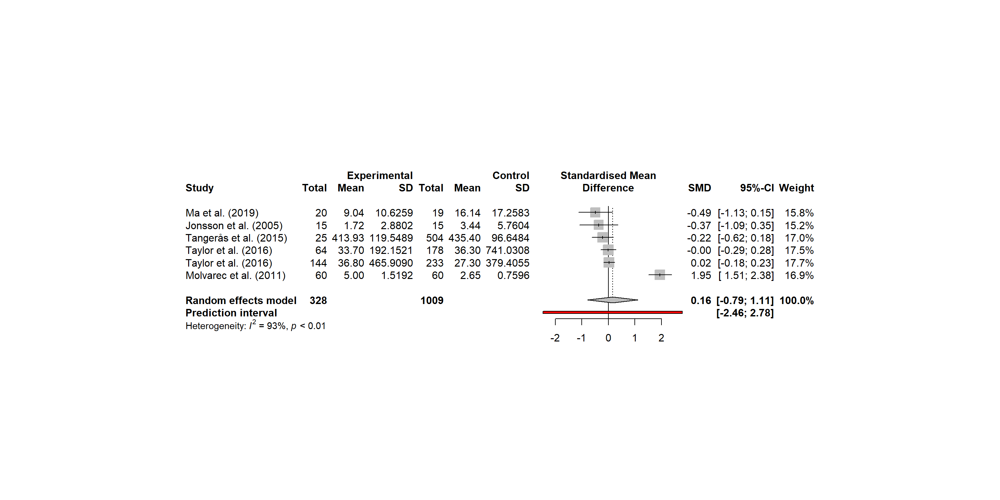

15
725
0
3557
41


Feel free to contribute! The easiest way to contribute is through github and is described step-wise below.
If you are new to git, this guide can help you getting started. The repository for the database is https://github.com/andjar/CyPreg.git
Check data/studies.csv (or the Overview page) to see that the study you want to add is missing from the database
Add the new study to data/studies.csv. Here, type should be either raw or aggregated, and the preferred filename is of the form firstauthorYYYY.csv (e.g. stokkeland2019.csv)
The data are to be added in a new .csv-file but it may be nice to use an existing file as template. Raw data live in the data/raw folder and aggregated data in data/aggregated.
The data file should have a long format where each cytokine measurement has its own row. The variable names are columns with the variable name on top. Please see data/variables.csv for variable names
If you want to append a new variable, you must also add it to data/variables.csv and provide a short description so that others can understand exactly what it means
Please adhere to the following convention: Variable names should have the form basename.suffix where basename is added to data/variable.csv. Available suffixes, that are used in the csf files that contain data, are
median: If the given value is reported as median
mean: If the given value is reported as mean
sd: If the variation in the given value is reported as standard deviation
percentile.%n: If the variation in the given value is reported as the %nth percentile. Remember that range corresponds to the 0-100th percentile
def: To provide details regarding a basevariable
The highest and lower percentiles will be used for basename.upper and basename.lower, respectively. If standard deviation is given, upper and lower will be the corresponding value +/- 1.97 times the standard deviation
Cytokine names should match the column cytokine in data/cytokines.csv